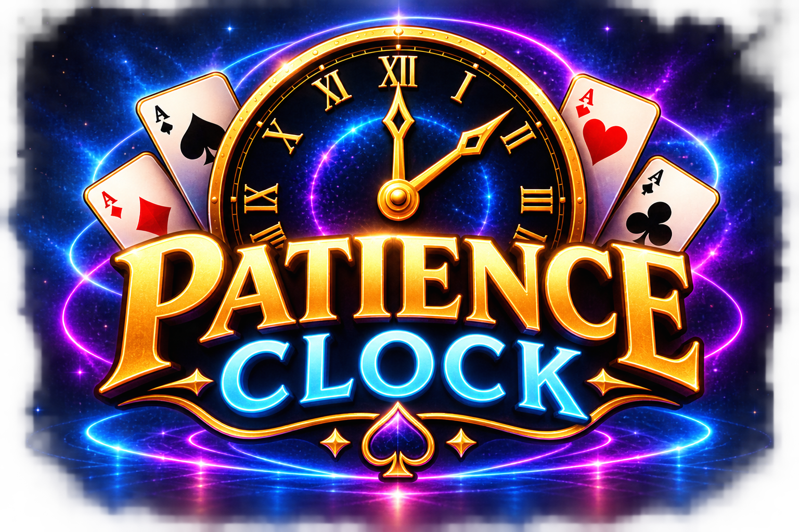
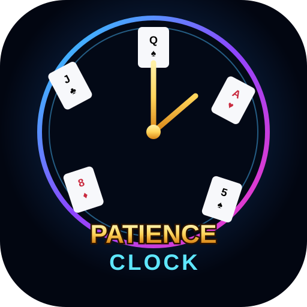

Patience Clock
Preparing a fresh deck…
Shuffling…
🕐 Follow the rankA=1 · J=11 · Q=12 · K=centre
👑 Four KingsThe fourth King stops the game.
🎴 Random deckA new shuffle every game.

The classic 52-card clock game.

Patience ClockPreparing a fresh deck…
Personal records stay on this device for now. A global leaderboard can be connected later.
Reveal and place all 52 cards in their correct positions around the clock. Reveal the fourth King before completing the clock and the game ends.
The game deals the 52-card deck into 12 piles, one at each clock position, with four cards in every pile. The four remaining cards form the DRAW pile in the centre.
A pile will be highlighted to show you where to play. Tap or click the highlighted pile to reveal its top card. The revealed card appears in the inner area of the clock.
Drag the revealed card to the clock position matching its rank:
After you place a card, that card's pile becomes the next pile to play. Tap or click it to reveal the next card, then continue following the chain.
When you reveal a King, drag it to the KINGS pile in the centre. The DRAW pile then becomes your next source of cards. Reveal the next card from DRAW and continue.
There are four Kings. If the fourth King is revealed, the game ends immediately. You only win by placing all 52 cards before this happens.
Reveal and correctly place the complete deck and you've solved the clock. Your result records your completion time and moves for your personal records.
Every card sends you to another pile, so pay attention to the chain and think ahead.
Patience Clock is designed for landscape play on phones. Rotate your device to get the full clock and drag cards comfortably.
Tablet and desktop layouts work normally.